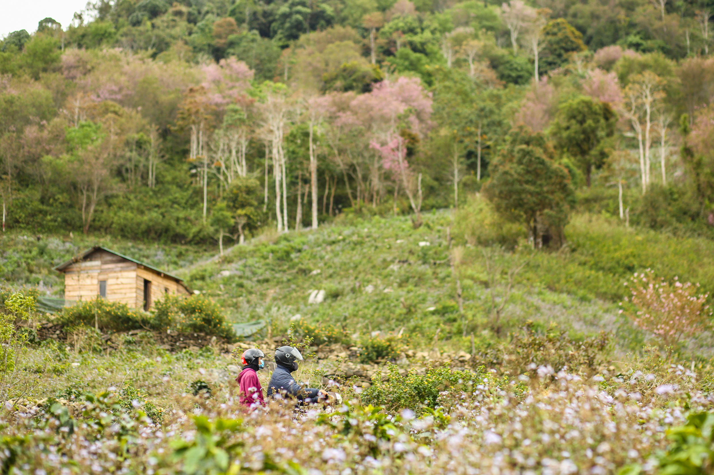
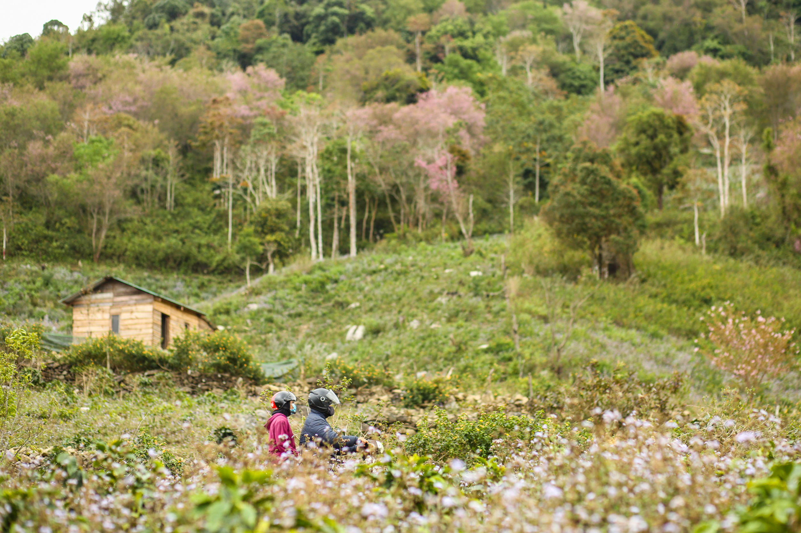

'Mai anh dao," or wild Himalayan cherry flower trees, are in the best blossoms in Lam Dong Province for a few short weeks from the end of January until mid February.
There are more than 3,000 such trees around Lac Duong, mostly along downtown street. And just a few kilometers from Da Lat, one can find the pink color along the whole of National Road 20 to Duc Trong District, or along National Road 27C to Lac Duong
The pink hills are thanks to the K'Ho ethnic community that plant the trees. overcoming hundreds of meters of bumpy roads which are frequently used by local farmers to travel to their plantations, in recent years tourists have flocked to this area to find the pink petals among the coffee hills.
Call it a desire to see the pink flowers, the thirst for some good pictures on social media, or the lure of spring, more and more people visit Da Lat these days. Perhaps a new custom is on its way, resembling the Hanami (or “flower viewing”) tradition in Japan.
 
